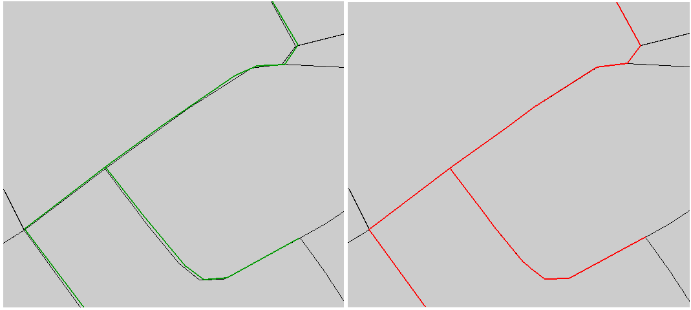

NAME
m.snaplp Snapping linear entities on areal entities
KEYWORDS
vector, linear, snap, areal
SYNOPSIS
m.snaplp
m.snaplp help
m.snaplp [-b] input=name output=name polygon=name snap=float [--overwrite] [--verbose] [--quiet]
Flags:
- -b
- Line creation by polygone boundaries (pseudo snap because polygone boundaries are used to create a new vector line)
- --overwrite
- Allow output files to overwrite existing files
- --verbose
- Verbose module output
- --quiet
- Quiet module output
Parameters:
- input=name
- Input vector map
- output=name
- Output vector map
- polygon=name
- Input vector polygon
- snap=float
- maximum distance of snap (in map units)
DESCRIPTION
m.snaplp allows the user to snap lines on areal entities in threshold (snap value).
NOTES
This script makes an iterative process for each line in three steps:
snap line points on polygon points, snap line points on polygon
boundaries and add polygon points along line. If the snap value is too large, geometry problems can appear. In this case, the user should clean the line vector geometry manually before using m.snaplp script.
If using Flag B, a more simplified method is used : closest boundaries of polygon layer are used to create a new line vector map. Each boundary used will be a new line.
EXAMPLES
Snapping line1 vector to polygon1 vector with a threshold of one meter
GRASS 6.3.0 :~ > m.snaplp input=line1 polygon=polygon1 output=line2 snap=1
|

|
|
Input line1 layer (left; in green color) ; Output line2 layer (right; in red color)
|
Using Flag B
GRASS 6.3.0 :~ > m.snaplp -b input=line1 polygon=polygon1 output=line2 snap=1
SEE ALSO
m.network, m.disline, m.segline
AUTHORS
Michael Rabotin, UMR LISAH, Montpellier, France
rabotin@supagro.inra.fr
Last Changed: 21 July 2010
Main index
Copyright UMR LISAH OpenFluid